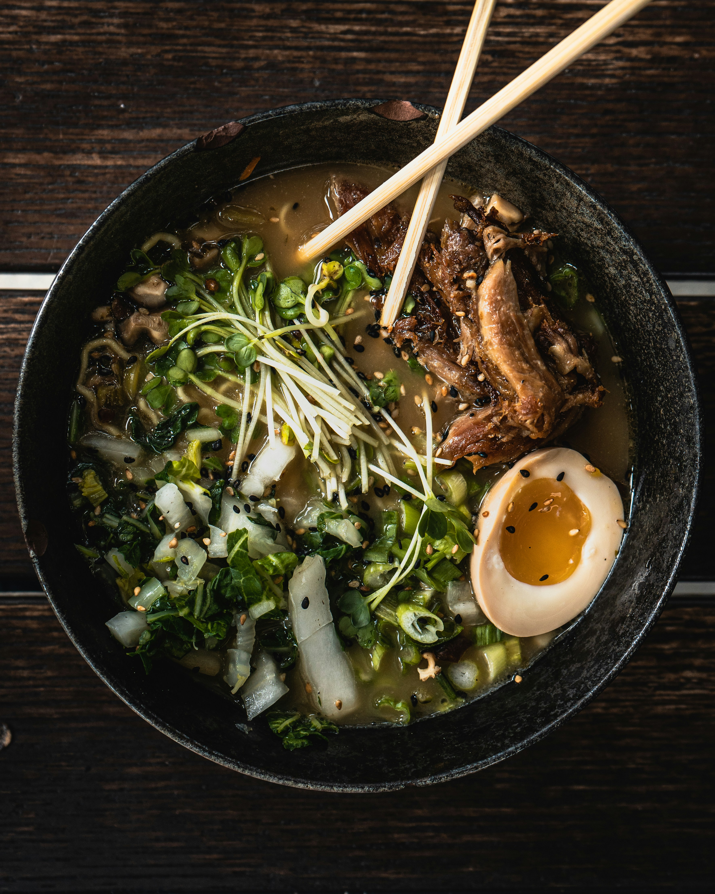

Ramen
Frescura y tradición japonesa.
Descripción
El ramen tonkotsu es uno de los platos más icónicos de la gastronomía japonesa, conocido por su caldo espeso elaborado a base de huesos de cerdo cocidos durante horas.
Tradicionalmente, se sirve con fideos de trigo, chashu, huevo cocido, algas nori y cebolla verde.
En Sakura Sushi, preparamos nuestro ramen siguiendo técnicas tradicionales, utilizando ingredientes frescos y cuidando cada detalle.
Galería
Ramen Clásico

Ramen Especial

Ramen Premium
×
❮
❯
Nombre del plato